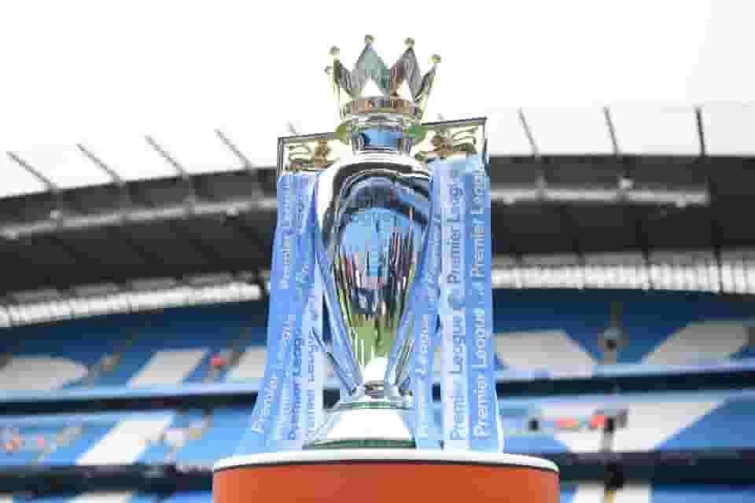
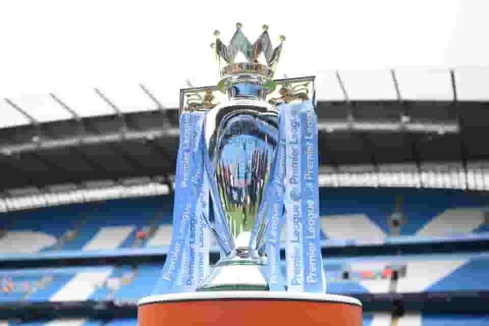

 
Oswald soccer an online betting site that provides the best betting tips sourced from analysis and statistics, this means that Oswald soccer is simply best soccer info, Analysis and Prediction site.
Soccer Predictions Today
Get today's best bet and betting tips for free, select from our experts revised tips which is targetteted at bringing the possible best odds for your daily winnings.
Daily TipsLeague: Germany-Bundesliga: Qualification
Tip:Over 1.5
W D W L LL D W D L
NANA
League: EURO U17 knock out: Final
Tip: Over 2.5
W W W W W W W D L W
NA NA
League: France-League 2
Tip:GG
W D W W DD W W L D
NA NA
League:Myanma-National league
Tip:Away
L W D L W W W W W L
7th 3rd
League:Norway-Cup
Tip:Away
W W W W L L W W W D
NA NA
League: Norway-Cup
Tip:Away & Over 2.5
D W L D LW W W W W
NA NA
League: Norway Cup
Tip:Over 2.5
W W W L LW W L W W
NA NA
League: Norway-Cup
Tip: Over 1.5
W W L D DW W W D D
NA NA
League: Italy-serie B: Relegation Playoffs
Tip: Home/Draw
L D D L WW L D D L
NA NA
FORMATION BREAK-DOWN:
W:WON
D:DRAW
L:LOST
Correct Score betting Tips
League:Italy-serie B:Relegation Playoffs
Correct Score: 1:0
League:Egypt-Premier league
Correct Score: 1:1
League:Egypt-Premier league
Correct Score: 1:0
League: Norway-Cup
Correct Score: 2:3
Goal-Goal betting Tips
League:Germany-Bundesliga: Qualification
Tip:GG
League:Netherland-Eredivisie: UECL Playoffs
Tip:GG
League:Netherland-Eredivisie: UECL Playoffs
Tip: GG
League: CONCACAAF Championship
Tip: GG
League: Czech Republic-1st league: Qualification
Tip: GG
We aim at providing More tips on a daily. Hence we will always provide the best safe odds for you.
Daily Soccer News:
Kareem Benzema has been in talks with the with the Real Madrid FC over the bid from the Saudi Arabian club who offered him a bid of about €100m per season plus match bonuses. Al Lthihad are now waiting to hear what Benzema's response to their bid would be.
Benzema is expected to reach a conclusion soon as Real Madrid are still to extend his contract supposing he chose not to accept the bid from Al lttihad.

The France forward and PSG top goal scorer of season has reviewed that he is very happy at PSG and will definitely not be available for transfer since he will be retaining his contract there in PSG.
Mbappe stated that he loves playing at PSG and will like to remain part of their project.
FC Bayern Munich has discharged Oliver Khan off his duty as the C.E.O of the club. This action was taken by the club to Foster efficiency in the future. Khan didn't even have to attend the club's final match which earned them the trophy for the 33rd time in history.
The board has appointed Dreesen to replace Khan as a new C.E.O for the club.
Erling Haaland has received double seasonal awards from the English Premier league. Having created several records and broken many records as well, such as the highest goal scorer of the current season and also the highest goal scorer in a single Premier league season.
The premier league has named Haaland the EPL player of the season and also named him the youngest player of the season. This is one of the awards he received from the board as he has been awarded the player of the month on several occasions.
The PSV board has confirmed the dismissal of Ruud Van Nistelrooy, who has been managing the club since the beginning of the current season.
This occurred as a result of misunderstanding between the Dutch man and the PSV board resulting in complaints from not just the board but also the players. He fails to receive instructions and help from his fellow coaching staffs making his coaching difficult.
Ruud won two titles including the Dutch Cup and the Dutch super cup just in a single season with PSV
FA has suspended Ivan Toney following his breaches to their betting rules. Ivan Toney who has been placed under investigation by the the board has finally been proven guilty of the FA law breaches. The Brentford striker had the best season of his career this year after finding himself in the list of the EPL top scorers of the season. Ivan Toney could not join the England squad for the EURO 2024 qualification matches due to the of been proven guilty in the future.
FA has placed Ivan Toney under eight(8) Months suspension and a fine of €50,000 as a disciplinary measures towards his conducts.

The south Korean Midfielder Son Jun Ho has been detained in China over allegedly Involving in bribery. The player who also featured in the South Korean National team in the 2022 world cup in Qatar, has been placed under investigation by the Chinese government who suspects that he is involved in match fixing between clubs, officials and club owners. This is because the government Currently suspects match arrangements between teams and is currently digging down the tunnel for confirmation.
The Shandong Taishan football club which he plays for in China has been crowned the China super league champions of the season. The club has maintained silence over the situation since detention on friday.

The Arsenal's Midfielder have to leave the football club as there is no current talk from the board to renew his contracts that wll be expiring on june. Xhaka has played with the premier club for seven years since he joined from the German side.
He scored a total of seven(7) Goals for Arsenal in the current season and has been a very important part of Arsenal's Midfield. He might have to travel back to the German side to continue his career since Bayer Leverkusen has been in an advanced talk with the club for the release clause of €15 Million.
Understand that nothing has been concluded yet.

Jordi cruyff has made his intentions of leaving Barcelona known to president Joan Laporta in a meeting held by the board.
The Barcelona sporting sporting director ( Jordi Cruyff), A former Manchester united and barcelona player. Currently a member of the Barcelona board of directors. He has made his intentions of leaving the club known to Barcelona board members following the reason that he wants to face new challenges in his proffession. Jordi Cruyff joined Barcelona in 2021 and have served the team for two years after he left Shenzhen as a manager in 2021. He is one of the Barcelona league winning team.
After Losing 0:2 to fulham on saturday, southampton's relegation from the English Premier league to championship was confirmed. Despite been managed by three different managers in a single season, southampton has been confirmed to be relegated from the premier league after playing playing 11 consecutive seasons in the premier league since they were last relegated in the 2004/2005 EPL season.

Mauricio Pochettinho's deal to chelsea as the next head coach after Frank Lampard's contract expires at the end of the season. Pochettinho has accepted the the contract and is expected to move to England very soon with his coaching staffs.
Could Pochettinho revive chelsea? Chelsea had a very terrible experience in the current season despite signing contract with three different managers in the same season. things keep getting worse for the club each time a new manager is employed.
The hope of the fans that Mauricio Pochettinho will return the winning days at stamford Bridge, because fans could no longer bear the loses they see each time that Chelsea plays.
FC Barcelona has done it once again, Barcelona has lifted the laliga title under the coaching team of Xavi Hernandez. This is the first official trophy that the coach has won with the club and the first laliga title the team is winning after three years.
Barcelona persisted and won the laliga title after they were knocked out of the Champions league and of the Europa league as well. They were confirmed laliga champions after a 4:2 win over Espanyol on sunday.
For Instant Betting
Visit SportyBetVisit 1x Bet
Visit M Sport
Visit bet9ja
Visit betking
Blogs


Over the years, betting has become the means of extra income for sports lovers more especially the football lovers, it really contributes immensly for the livelihoods of many individuals who take interest in it. but the question asked by many is where exactly can these games be analysed accurately. Though matches can't be analysed 100% acurately, but based on statistics, it can be analysed almost accurately by some experts and here we are to provide you with the best match predictions based solely on statistics.
About us
OSWALD SOCCER is targetteted at providing you with the possible best match predictions based solely on statistics. with the skills of our experts on match analysis we generate an outcome possibly 90% accurate.Our company is founded since the year 2020 and has been able to deliver excellently since then as testified by different individuals and personalaties whom has used our site for predictions, match updates, match highlights , sports News and lots more you can follow our social handles or contact us to to let us know what you think about OSWALD SOCCER, and stay tuned to receive updates from us.
privacy policy
Due to addiction and irresponsible betting we consider betting below 18 as under aged hence not advised to to bet if you are under the age of 18+ . This platform is not a betting platform instead should be used for reference purposes. Every of our content is reserved, hence should not be a subject to copy instead should serve as a reference. Every of our content are been reviewed by experts before posting.
disclaimer
Our predictions are outcomes of statistics, hence might not be 100% correct. Request for prediction at least THREE days before Match, else we will not be responsible for not delivering.
Contact Us:
oswaldsoccer50@gmail.com
+234 8110384013
©: oswald 2023|| All right reserved